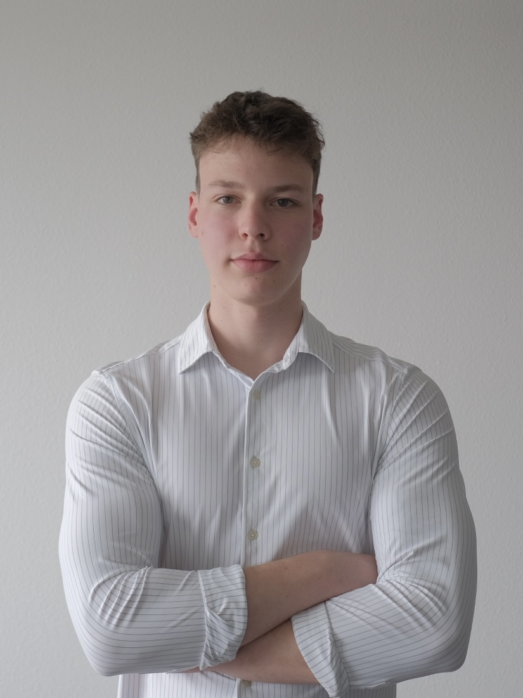

Data science student · momentum trader
Third-year Applied Data Science & AI at BUas, working at the seam of machine learning and quantitative finance. Scroll to ride my momentum strategy, backtested from 2016 to today and running live capital since January 2026.
It started with the momentum literature (Jegadeesh & Titman, Antonacci's dual momentum) and grew into SwingLab, a platform I built to watch market behaviour, run technical analysis, and backtest strategies like this one. Every idea goes through out-of-sample testing, Monte Carlo and bootstrap resampling, with transaction costs and slippage modelled in, before it trades a cent. Since January it's been live with real money, riding the strongest names (mostly chips and semis), and it's up about 72% so far.
The ones I reach for most, one at a time. Scroll to spin the stack.

I'm a third-year Applied Data Science & AI student at BUas, starting a pre-master at TU/e this September. I worked as a RAG intern, deploying the assistant on GCP. These days I'm mostly picking up new things in statistics and ML, and trying not to lose my own money on the quant strategies.
I started programming in Python back in 2022, building little things with Flask. Then I moved into data science at BUas and worked through the whole ladder: regression, classification, clustering, then the heavier stuff like computer vision, NLP, and MLOps.
What I enjoy most is finding patterns and solving problems with data, so when I started reading about quantitative finance it clicked: modelling markets, measuring risk, trying to squeeze out returns. That's what pulled me into building SwingLab, and into IMC Prosperity 4, where I competed solo against 18,800 teams and finished 223rd overall, 1st in the Netherlands on the manual round.
The book that first got me into quant was Marcos Lopez de Prado's Advances in Financial Machine Learning, still the one I go back to most.